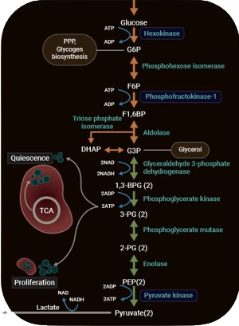
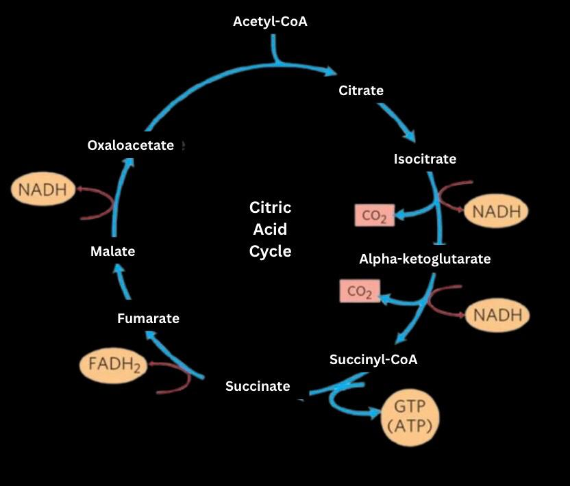

Key Terminology/Things to be Familiar With:
- \(\ce{NAD^+}\) and \(\ce{FADH^+}\) are oxidized forms of the electron carriers \(\ce{NADH}\) and \(\ce{FADH2}\)
(please note that \(\ce{FADH2}\) has less energy than \(\ce{NADH}\))
- ADP + Pi is phosphorylated to form ATP (the working form) → works like a battery
Introduction to cellular respiration:
- Goal: Break down glucose (\(\ce{C6H12O6}\)) to release energy and trap it in ATP (adenosine triphosphate) molecules.
- Overall Equation (Aerobic): \(\ce{C6H12O6 + 6O2 → 6CO2 + 6H2O + Energy}\) (in the form of ATP and heat)
- Equation in words: Glucose and Oxygen yeilds Carbon Dioxide, water, and energy
Aerobic Respiration: The Efficient Pathway (Needs Oxygen!)
- Location: Cytoplasm (outside the mitochondria).
- No oxygen is needed for glycolysis, it happens wether oxygen is present or not
- Process: One glucose molecule (6-carbon sugar) is broken down into two pyruvate molecules (each is a 3-carbon molecule).
- Energy requiring-phase/key inputs: Glucose, 2 ATP, NAD\(^+\)
- Energy payoff phase/key Outputs (Net):
- 2 Pyruvate molecules
- 2 ATP (Net gain: 4 produced – 2 invested)
- 2 NADH (carrying high-energy electrons – it has been reduced)

Note that memorization is not necessary and diagrams are added only for clarification
Stage 2: Pyruvate Oxidation ("The Link Reaction")
- Location: Mitochondrial Matrix (inner space of the mitochondrion). Only happens if \(\ce{O2}\) is present (if not, process will divert to fermentation).
- Process: Each pyruvate molecule (from glycolysis) is converted into Acetyl-CoA (2-carbon molecule attached to Coenzyme A).
- Key Inputs (per pyruvate): Pyruvate, \(\ce{NAD^+}\), Coenzyme A.
- Key Outputs(per pyruvate):
- 1 acetyl-CoA
- 1 NADH
- 1 carbon dioxide (waste product)
- Per Glucose: Remember, glycolysis produces 2 pyruvates, so pyrivate oxidation always happens twice: 2 Acetyl-CoA, 2 NADH, 2 \(\ce{CO2}\)
Stage 3:Krebs Cycle (Also known as "Citric Acid Cycle")
- Location: Mitochondriak Matrix.
- Process: Acetyl-CoA enters a cycle of reactions. The 2-carbon acetyl group is completely oxidized to CO2. Energy is captured in electron carriers.
- Key Inputs (per turn, from 1 Acetyl-CoA): Acetyl-CoA, NAD+, FAD (another electron carrier), ADP + Pi
- Key Outputs (per turn):
- 1 ATP (or GTP, which is easily converted to ATP)
- 3 \(\ce{NADH}\)
- 1 \(\ce{FADH2}\) (another loaded electron carrier)
- 2 \(\ce{CO2}\) (waste product)
- Per Glucose: The cycle turns twice (one for each Acetyl-CoA): 2 ATP, 6 NADH, 2 FADH\(_2\), 4\(\ce{CO2}\)

Stage 4: Oxidative Phosphorylation (Electron Transport Chain & Chemiosmosis)
- Location:Inner Mitochondrial Membrane
- Process:
- Electron Transport Chain (ETC): NADH and FADH\(_2\) (from previous stages) drop off their high-energy electrons to a series of protein complexes embedded in the membrane. As electrons are passed down the chain, energy is released and used to pump protons (\(\ce{H^+}\)) from the matrix into the intermembrane space, creating a proton gradient (like water behind a dam). Oxygen (\(\ce{O2}\)) is the final electron acceptor at the end of the chain, combining with electrons and protons to form water (\(\ce{H2O}\)) - this is a dehydration synthesis reaction!
- Chemiosmosis: The protons (H\(^+\)) flow back down their concentration gradient into the matrix through a special protein channel called ATP Synthase. This flow of protons powers ATP Synthase, which spins and catalyzes the addition of phosphate (Pi) to ADP, making ATP (phosphorylation)
- Key Inputs: NADH, FADH\(_2\), \(\ce{O2}\), ADP, Pi
- Key Outputs: ~28-34 ATP (The exact number varies slightly). This is where the majority of ATP is produced in the entire cellular respiration cycle! \(\ce{H2O}\) is also produced and NAD\(^+\) and FAD is regenerated.
Summary of Aerobic Respiration (per glucose)
- Total ATP Yield: ~32-38 ATP (2 from Glycolysis + 2 from Krebs + ~28-34 from Oxidative Phosphorylation).
- Key Waste Products: \(\ce{CO2}\), \(\ce{H2O}\)
Anaerobic Respiration/Fermendation (No Oxygen!)
- Why? When oxygen is absent, the ETC backs up (no final electron acceptor), and NADH cannot unload its electrons. This stops the Krebs cycle and Pyruvate Oxidation.
- Location: Cytoplasm.
- Types:
- Lactic Acid Fermentation:
- Pyruvate is directly reduced by NADH to form lactate (lactic acid). NAD\(^+\) is regenerated.
- Happens in: Human muscle cells during intense exercise, some bacteria (used in yogurt production).
- Equation: Pyruvate + NADH → Lactate + NAD\(^+\)
- Net ATP: 2 ATP (from glycolysis only).
- Alcoholic Fermentation:
- Pyruvate is first converted to acetaldehyde (releasing \(\ce{CO2}\)),
then acetaldehyde is reduced by NADH to form ethanol (alcohol). NAD\(^+\) is regenerated.
- Happens in: Yeast (used in baking and brewing)
- Equations:
- Pyruvate → Acetaldehyde + \(\ce{CO2}\)
- Acetaldehyde + NADH → Ethanol + NAD\(^+\)
- Net ATP: 2 ATP (from glycolysis only)
Key Takeaways for IJSO
- Cellular respiration extracts energy from glucose to make ATP.
- Aerobic respiration (needs \(\ce{O2}\)) is much more efficient (~32-38 ATP) than anaerobic fermentation (2 ATP).
- Know the Stages of Aerobic Respiration: Glycolysis (cytoplasm), Pyruvate Oxidation (matrix), Krebs Cycle (matrix), Oxidative Phosphorylation (inner membrane).
- Know the Key Molecules: Glucose, Pyruvate, Acetyl-CoA, ATP, NADH, FADH\(_2\), \(\ce{O2}\), \(\ce{CO2}\), \(\ce{H2O}\).
- Know that 2 ATP’s are produced from glycolysis and 2 ATP’s are produced from Kreb’s cycle.
- Know that 2 NADHs are produced from glycolysis, 1 NADH is produced from pyruvate oxidation, 3 NADHs are produced from Krebs cycle per glucose molecule.
- Oxygen's Role: Final electron acceptor in the ETC, essential for oxidative phosphorylation and high ATP yield.
- Fermentation's Role: Regenerate NAD\(^+\) to allow glycolysis to continue in the absence of oxygen, producing minimal ATP. Know the two main types (lactic acid, alcoholic) and their products.
- Mitochondria: The powerhouse of the cell for aerobic respiration (except glycolysis).
Study these steps, understand the flow of molecules and energy, and visualize where each stage happens. Good luck!
Written by Kasiban Parthipan